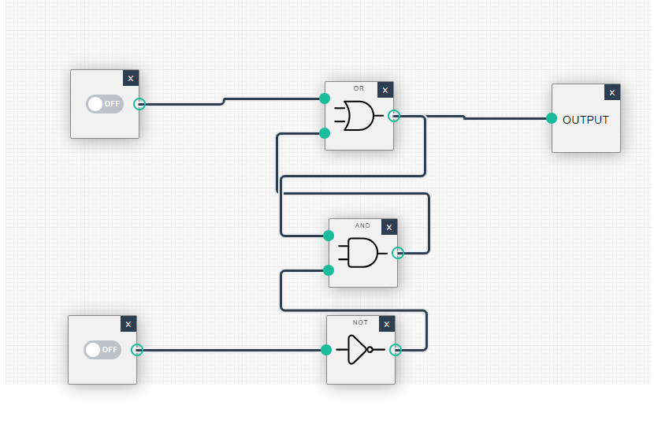

Boolean Operation - A operation that manipulates one or more true/false values. There are four gates which are: AND, OR, XOR, NOR gates.
On chapter one computer science us about data storage. Everytime you think of a computer it is (Input, Process, Output). Input and output are variables so they have to come in and out and the processing are these and gates.
FIRST BUTTON ON. I put an electric voltage to pass and I stopped it. But this output remembers it. We can arrange this 3 gates in any order and have something called memory and this memory would either say the output by one or off (1,0) and this is how I put a 1 in to memory
SECOND BOTTON OFF. I have now turned off the both bottons off. I have stored (0,0) in memory and it outputs 0.
This is not what it looks in there but it is the logic of whats going on. Once we know we can do this we can store ones and zeros. If we follow a set of standards we can represent text. The standard for text is unicode. We can also store numbers, pictures, audio ad video. This can all be represented by 1's and 0's.
